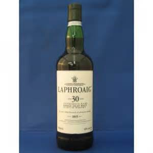
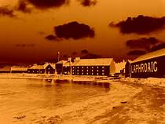
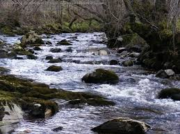

UNDER THE INFLUENCE
[Reprinted from Spring/Summer 2008 issue of Shenandoah; Vol.58. No. 1]
Donald Johnston, one of the brothers who founded the distillery at Laphroaig a couple of centuries ago, is said to have drowned in a half-finished barrel of whiskey. History does not record whether or not he was forced under like the Duke of Clarence, but the manner of his undoing might be deemed an occupational hazard, considering the various stages of producing and aging required to distill a single malt scotch. Although I would relish neither a full-immersion baptism in Laphroaig nor even the consumption of so much as half a bottle on a single evening, I am an admirer of its decidedly unusual flavor, and though it falls into the category of acquired tastes (along with oysters, sushi, curling, Scandinavian spy novels and lyric poems), this is one I recommend that whisky lovers endeavor to acquire and cultivate.
Laphroaig is an Islay scotch, single malt, most frequently twelve years in the making, though in 2005 the ten-year-old version was named the world’s best single-malt whiskey. The barley is dried over a peat fire, hand turned in the drying, the result 86 proof, refractively golden, smoky and dangerous tasting. My wife and I call it “The Frog,” in part due to its name and in part because it has something of an amphibious aura, as if it comes to us from the threshold of two worlds, which is not merely metaphorical. The village of Laphroaig perches on the Atlantic coast of the Hebridean island of Islay, which is both earth-reeking and soggy. The rain and mist fall year-round onto the rocky, heathery hills and collect in moorland pools. Then the water streams down into corries, seeps through peat and follows the dictates of gravity until it enters Loch Kilbride (which sounds less ominous when you know that “kil” means “church”). Once distilled over a peat fire, with salty sea air allowing the kilns to breathe, the elixir is aged in bourbon barrels, usually quarter casks, and is never chill filtered. The result is a shadowy, wintry aroma, an oily texture, a sharp-going-sweet taste reminiscent of hillside heather, a peculiar bite I can’t describe any more precisely than to say it’s slightly skunky.
If there’s an outlaw overtone to this scotch, it’s understandable. The unfortunate “Donald Johnston” and his brother Alex were actually McCabes of Clan Donald, Jacobites who found it salutary to change their names after even the most adamant devotee conceded that the Jacobite uprising was never going to succeed, the Stuarts would never reign again. In short, the founders were rebels in hiding. Since they settled on an uncomfortable island known for smugglers and moonshiners and began transforming the ingredients nature provided into something almost supernal – we do refer to the stuff as “spirits” – it’s not too surprising that their product is at once earthy and nocturnal, its aftertaste so remote-seeming it suggests legends shared around a driftwood fire, the smoke blowing about in ghostly configurations, the words uttered with the burr of a Hibernian accent.
The Gaelic origin of a generic term contributes to some of these impressions. We have the mongrel word whiskey because, tradition tells us, English soldiers (more accustomed to beer and the sorrows of gin, which were epidemic in London) could not pronounce the term for the preferred spirits of the Celtic countries they were trampling into submission. You can hardly blame them; it’s a twisty phrase: the Irish call the stuff uisce beatha, not simply because their uninvited guests couldn’t say it, but because the phrase means “the water of life.” Though whiskey, taken in excess, can certainly be as destructive as many other medicinal substances (belladonna, morphine, pie), many a reflective drinker, upon reaching the mellow threshold state and balancing there, savoring the lift and lilt, instead of toppling into abuse, can testify to whiskey’s salutary properties. As I said, the water of life.
My wife and I once planned a journey to Scotland for a distillery tour of the Speyside and Western Isles, to sample Bowmore, Ardbeg, Lagavulin, to joke about haggis, eat lamb and tubers, to fish and tap our feet to fiddles, melodeons, pipes. We have never explored the world of fine scotches as scholars or adepts, and we would hardly qualify as connoisseurs, but we like a variety of tastes, we’re drawn to the manageable mortification of northern coasts and we’re not averse to the wild landscapes where outlaws are likely to thrive. Though an illness prevented us from making the trip, I can still imagine and savor it. On mild winter nights I will gravitate to the squat bottle of Aberlour, with its friendly bouquet and taste, easy to like, sweet and golden, less mischievous, but when there’s any hint of severe cold of a storm, it’s the froggy green bottle of Laphroaig with its plain white label I’m drawn to, despite its bearing the Royal Warrant of the Prince of Wales.

The Frog is, for me, the signature of a season when others are drawn to genial conversation, nog, syllabub, mulled wine or good old indigenous Wild Turkey. I prefer something more involuted, rustic and, perhaps, romantic. It’s said that the barley for Laphroaig is allowed to soak and harden for a lunar cycle, so the ideal nights for imbibing involve not only a purring fire in the hearth, but also a moon visible through the skeletal trees. “Atmosphere.” I used to believe that purists take their whiskey neat, but so many single malts are further enriched by a whisper of cool, distilled water, and Laphroaig is no different. As I pour the first drink into my tumbler, I like to think of Joyce’s words: “The light music of whiskey falling into glasses made an agreeable interlude.” Because it’s late at night and the day’s work is behind me, there’s not much need for an “interlude,” but I enjoy the reverent stillness, the ceremony of it. The first taste is transporting, and it evokes those renowned crags and squalls, cries of cormorants and hen harriers, the scalding winds that assault and enliven the Hebrides. I’ll hold the slightly diluted scotch in my mouth for several moments and let it seep into my tongue and palate, then carry its cool burn down my throat. My mind slowly seems to become more supple, the troubles of the day less urgent, the mysteries of transformation – water and grain, fire and moss – fully enchanting. By the time I finish my first drink – fifteen minutes, twenty – I am “under the influence” of something at once exotic and earthy, ancient and current. My mother’s mother was a Polk, so perhaps there’s something genetic in the transaction, but I wouldn’t want to make too much of that, as I know of no other scotch lovers in the family.
The second drink amplifies, clarifies, intensifies, but by the time I reach the dregs, the effect begins to dull, to diminish and slip toward the commonplace. I have no doubt that this is related to the consuming system, and not to the substance consumed, but whatever the cause, this development has discouraged me from ever having a third drink of the Frog on a given night. I want to preserve the influence, a term which has its roots in influentia, a Latin word referring to stellar emanations and in no way suggesting inebriation. Starlight – no surprise here. Laphroaig is hardly a daylight libation, too ruminant to be a social drink, too complex and perplexing to encourage binging. It is, perhaps, the child of “solitude and slow time.”
But perhaps this reflects my own sense of caution. My wife has known me for well over a decade, and she claims never to have seen me even approach intoxication. Though I won’t say I’ve aimed in any way to emulate Robert E. Lee on this matter, one of his statements does come to mind: “I like it [whiskey]; I always did, and that is the reason I never use it.” I like it too, but my capacity for self-denial is . . . more modest.
This is the moment in a personal essay that cries out for an anecdote – first time I sampled the Frog, particular crisis the potion helped me weather, admission that I’m nursing a couple of fingers as I write this. I don’t have one, unless this fresh recollection counts. Last night I leaned back in the La-Z-Boy and gazed at the barley-colored knotty pine of my high-pitched ceiling. It’s a small but dependable pleasure, and I never do it without looking at the treaded shoeprints left on the planks, probably while they were spread on the floor and still damp with varnish. But the little trail always suggests someone walking or dancing on the ceiling, levitation, topsy-turvy, the Lord of Misrule. I’ve grown fond of those marks, and as I sipped my Laphroaig last night, I studied the prints and the russet owl-eyed knots that stare back at me from the shoal-like grain of the wood. I listened to the metal of the woodstove prinking and the purring stutter of flames as they darted and jigged out of the hickory. At such moments – content, about two notches of consciousness above sleep – I can almost believe God’s in his heaven and all’s right with the world. Last night, approaching my final allotted swallow, I was nearly convinced an intriguing harmony might prevail. “World peace.” A small revelation, but mine own.
Not wholly deceived by the aura of sapience and safety, I have long known not to drink while I write. So now, looking back from high noon on a winter day, I feel almost a disinterested witness as I sing the praises of this beverage, its reticent narrative and bold finish, its storied origin and tawny hue, the penumbral fancies it conjures. The name of the village and the whiskey spawned there is Gaelic for “the beautiful hollow by the spacious bay.” Paradise, Arcadia, Tir-na-Nog. I do not champion this scotch as code for the white rose of Bonnie Prince Charlie or even to encourage unorthodox appetites and behavior, but simply because enthusiasm will out and because Laphroaig’s provocative nature reminds me of poems I prize and will take down from the shelf, over and over, though I know what they’ll say and can almost recite them by heart. In an age of impatience and addiction to immediate gratification, any experience that compels us to savor and mull and muse has value. Keats and Yeats, Stafford and Bishop, Merwin, Heaney, Kizer, Galvin, Wright, Dickinson, Oliver, Donne, Longley, Boland and Hardy and Stephen Dunn. Laphroaig. Slainte mhath. Good health!
RTS